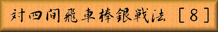

 |
|
||||
|
本章で四間飛車対棒銀の解説は最後となります。 | |||||
| Figure 1
|
「図１」は前章「図２」と同一局面、先手が▲３五歩と戦端を開いた所です。 「図１」から「図２」までの手順 ▽４二角 ▲３八飛 ▽６五歩 ▲４五歩 ▽同 歩 ▲３四歩 ▽６四角 ▲１一角成 ▽１九角成 ▲２一馬 ▽４二金 ▲３三歩成 ▽同 飛 ▲同飛成 ▽同 金 ▲３七桂 |
|||
| Figure 2
|
「図１」の▲３五歩に対しては▽４二角と引く手も有り、▲３八飛と寄らせてから ▽６五歩と突くのが狙いです。この手には▲４五歩 ▽同歩としてから▲３四歩と取り込みます。 これを逆にすると▲４五歩を取ってはくれず▽６四角とされて拙いのです。 ▲３四歩に▽６四角で、以下互いに角を成り合いますが「図２」の▲３七桂で全ての駒が働き また後手陣も弱体化しているので先手有利と言えます。 このように非常に有力な戦法と言える棒銀ですが、先手の四間飛車には事情が違って来ます。 最後に先手四間飛車に対しての失敗例を御紹介する事にします。 「図３」までの手順 ▲７六歩 ▽３四歩 ▲６六歩 ▽８四歩 ▲６八飛 ▽６二銀 ▲１六歩 ▽１四歩 ▲３八銀 ▽４二玉 ▲７八銀 ▽３二玉 ▲６七銀 ▽５四歩 ▲５八金左 ▽５二金右 ▲４六歩 ▽７四歩 ▲４八玉 ▽８五歩 ▲７七角 ▽４二銀 ▲３九玉 ▽５三銀左 ▲２八玉 ▽４二金上 ▲５六歩 ▽７三銀 ▲９六歩 ▽９四歩 ▲９八香 ▽８四銀 ▲７八飛 ▽６四歩 ▲４七金 ▽７五歩 ▲５九角 ▽７二飛 ▲４八角 |
|||
| Figure 3
。 |
「図３」は▲４七金と金が上がっている所が後手側が四間飛車の場合と違っている点です。 この一手の違いが全く別の変化を生み出します。 「図３」から「図４」までの手順 ▽７六歩 ▲同 銀 ▽６五歩 ▲５五歩 ▽同 角 ▲６七銀 ▽７五銀 ▲５六金 ▽２二角 ▲６五金 ▽７四歩 ▲５八飛 ▽６三金 ▲５五歩 ▽同 歩 ▲同 金 ▽５四歩 ▲４五金 |
|||
| Figure 4
|
▽７六歩 ▲同銀 ▽６五歩と定番の攻めに出た時に、▲５五歩と突き捨てる手が この形では成立するのです。１６４章「図３」と違うのは▽７五銀に▲５六金と金で角に 当てる事が出来る為、▽４六角とこちらの歩を取って角を捌く手が無い為です。 ▲６五金で次に▲７三歩から▲７四歩が有るので、▽７四歩と打って防ぎますが 以下「図４」では棒銀の攻めは完全に封じられ中央に駒を捌かれて後手の不利な局面です。 先手が四間飛車の場合は棒銀以外でも違いが出て来るのは当たり前ですが、特に棒銀の場合は 後手の居飛車側としては得策と言えない変化が多いのです。 以上で四間飛車対棒銀の解説を終わりにしますが、更に多数の変化も有りますし またこれからも新手や新手法が生まれるかも知れません。今まで以上に章数を重ねたのは この戦型の変化は居飛車対四間飛車の対抗型には広く応用が出来る物が多い為でした。 次章では今まで御紹介した居飛車の急戦策に対抗する、新趣向の四間飛車を御紹介します。 |
|||

|
||||